毕业典礼
一个阶段结束，也是一段产品路的开始。
这些不是作品集的主体，只是一些真实经过的地方：学校、北京、阿里，以及我逐渐靠近 AI 产品的过程。它们保留了一个刚毕业不久的人，如何从校园走进更大的现场。
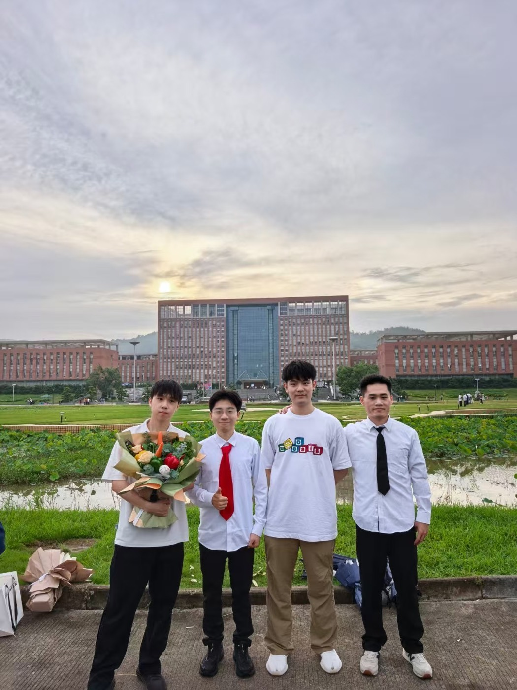
2025 年夏天，我从计算机科学与技术专业毕业。那时我对 AI 产品的理解还很朴素，但已经确定想进入真实业务场里，把技术能力转化成能被用户使用的产品。
到北京之后，我开始频繁走进不同的城市现场。历史建筑、公共空间、校园与科技园区，让我更直观地感受到：产品不是孤立存在的，它始终嵌在具体的人、场景和时代里。
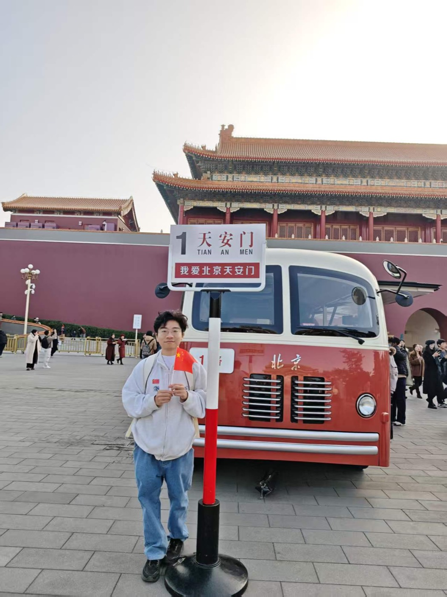
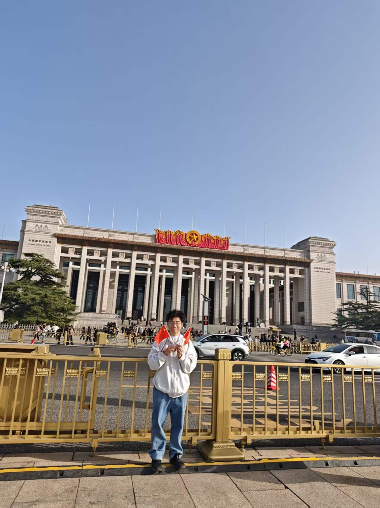
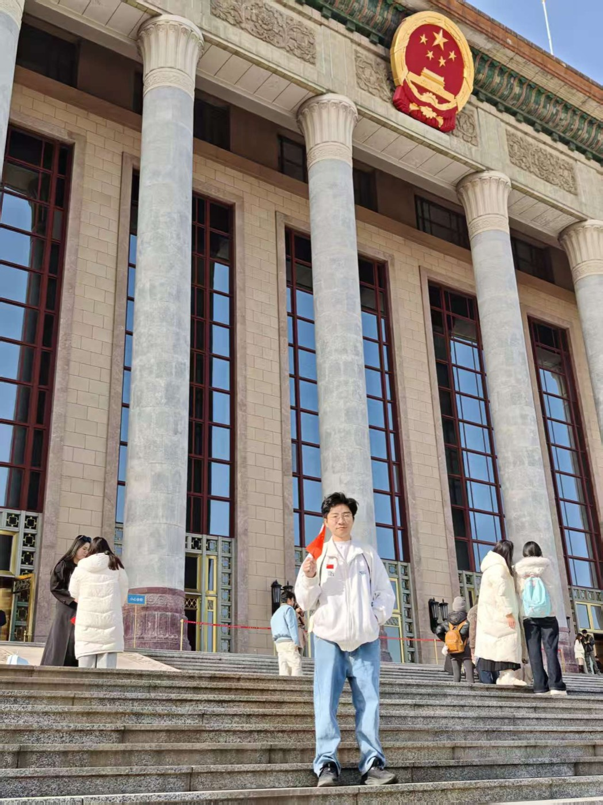
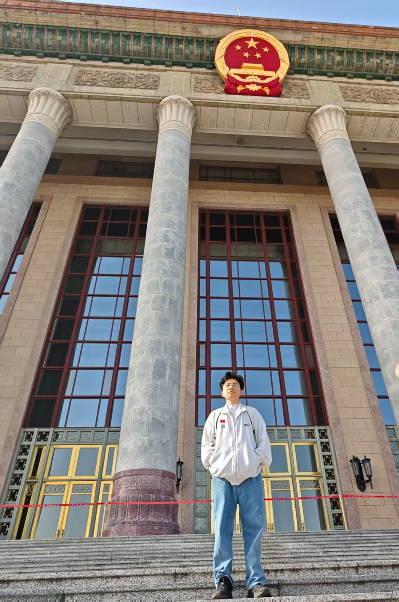
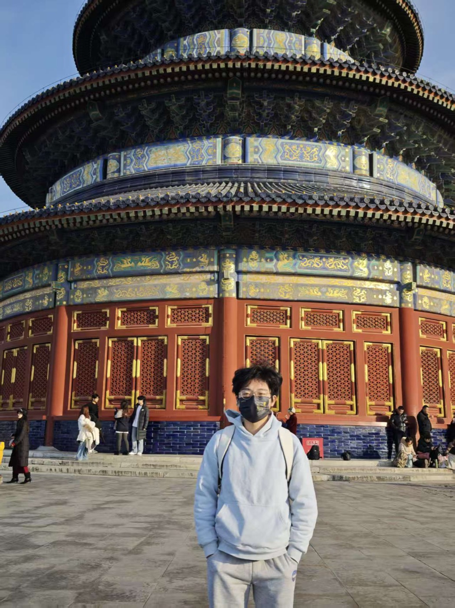
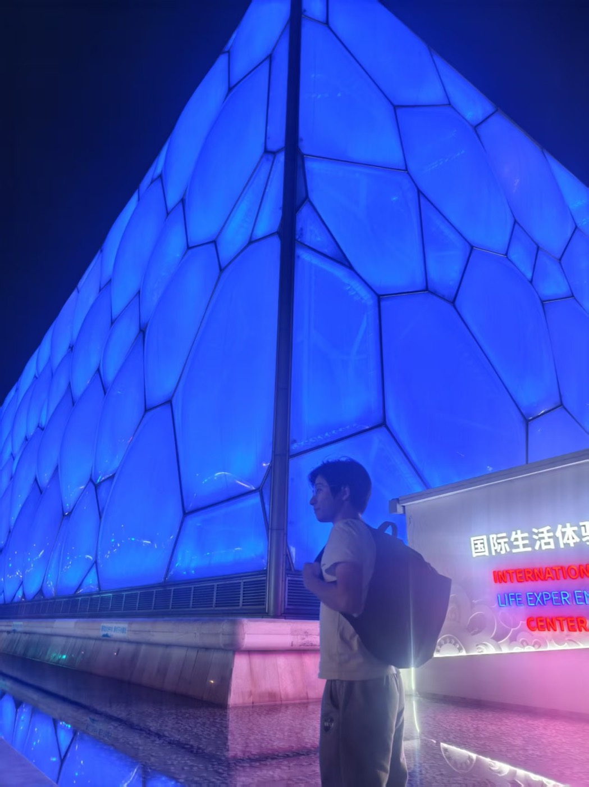
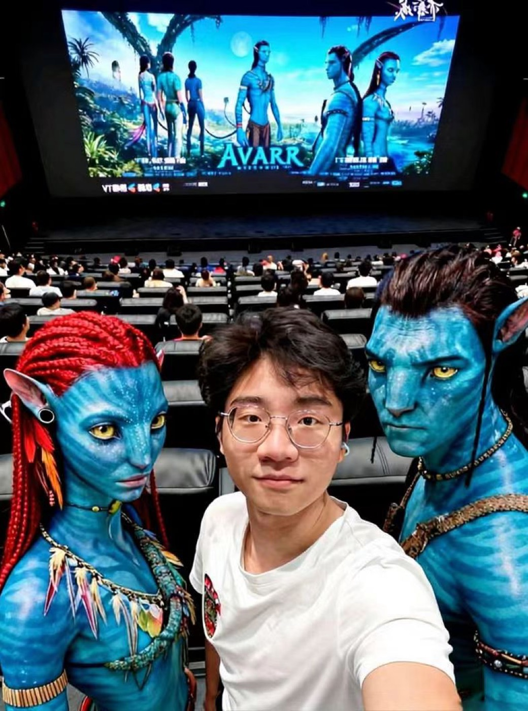
在阿里相关业务现场，我第一次更系统地理解 AI 产品的复杂性：它不只是模型能力，还包括数据、评估、协作、内容质量和用户体验。很多看似微小的判断，都会影响最终产品是否真的可用。
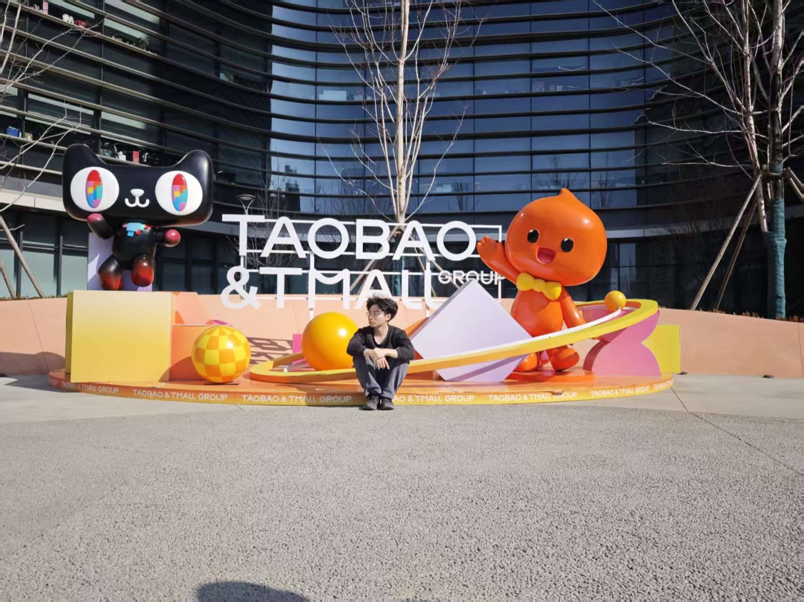
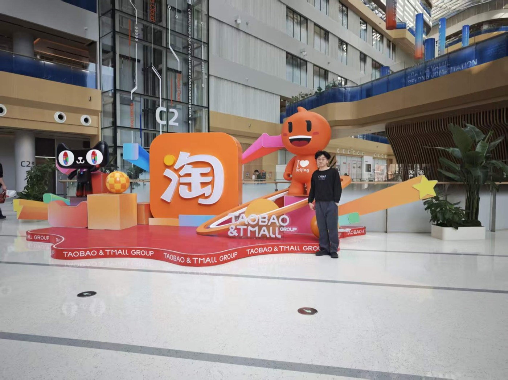
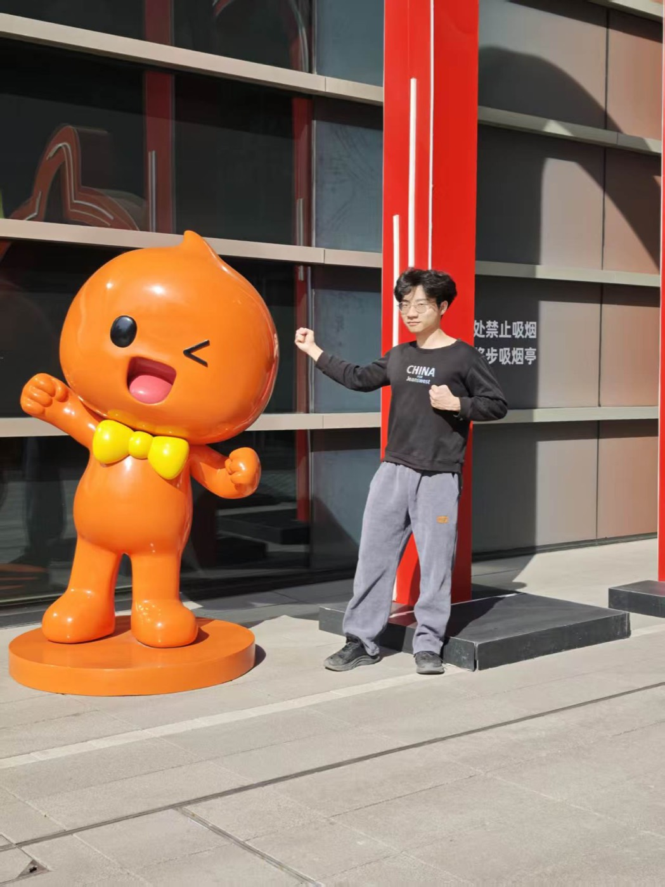
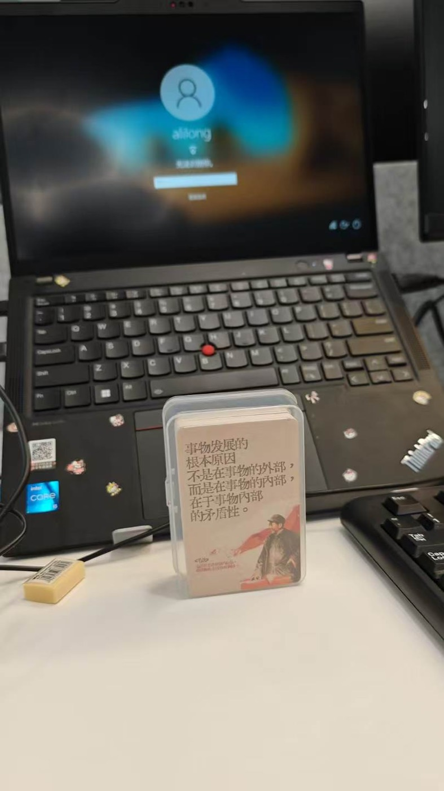
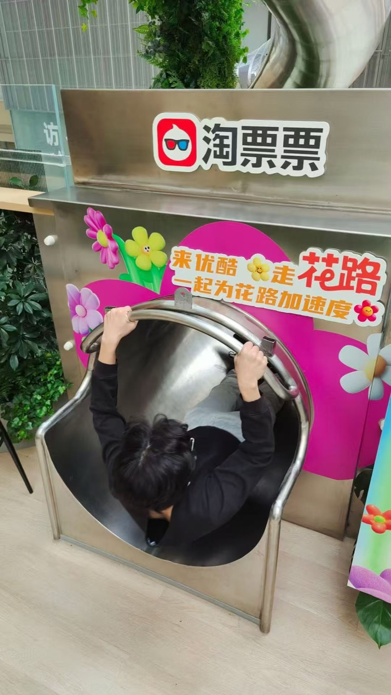
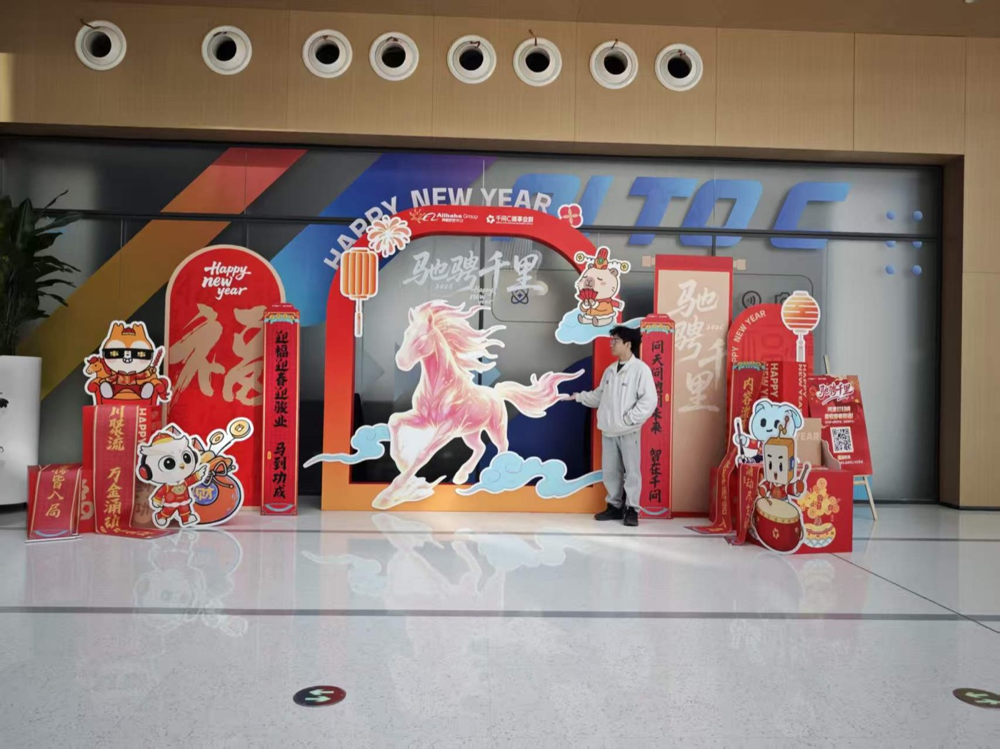